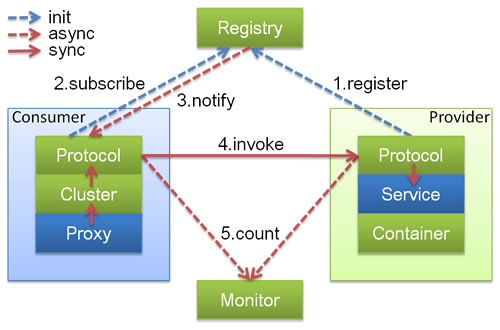
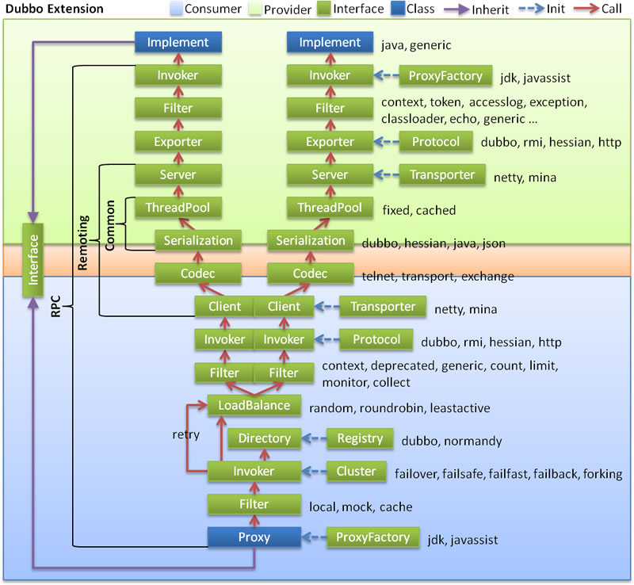

dubbo核心知识
dubbo是什么？
dubbo是一个分布式的服务框架，提供高性能的以及透明化的RPC远程服务调用解决方法， 以及SOA服务治理方案。
dubbo的工作原理



dubbo支持哪些协议
- dubbo协议：默认就是走 dubbo 协议，单一长连接，进行的是 NIO 异步通信，基于 hessian 作为序列化协议。使用的场景是：传输数据量小（每次请求在 100kb 以内），但是并发量很高。
- rmi协议：走 Java 二进制序列化，多个短连接，适合消费者和提供者数量差不多的情况，适用于文件的传输，一般较少用。
- hessian协议：走 hessian 序列化协议，多个短连接，适用于提供者数量比消费者数量还多的情况，适用于文件的传输，一般较少用。
- http协议：走表单序列化
- webservice协议：走 SOAP 文本序列化。
dubbo支持哪些注册中心
- Multicast 注册中心： Multicast 注册中心不需要任何中心节点，只要广播地址，就能进行服务注册和发现。基于网络中组播传输实现；
- Zookeeper 注册中心：基于分布式协调系统Zookeeper实现，采用Zookeeper 的 watch 机制实现数据变更；（默认方式）
- redis 注册中心： 基于redis实现，采用key/Map存储，key存储服务名和类型，Map 中key存储服务 URL，value服务过期时间。基于redis的发布/订阅模式通知数据变更；
- Simple 注册中心
dubbo支持的序列化协议
dubbo 支持 hession、Java 二进制序列化、json、SOAP 文本序列化多种序列化协议。但是 hessian 是其默认的序列化协议。
Hessian 的对象序列化机制有 8 种原始类型：
- 原始二进制数据
- boolean
- 64-bit date（64 位毫秒值的日期）
- 64-bit double
- 32-bit int
- 64-bit long
- null
- UTF-8 编码的 string
为什么PB的效率是最高的
PB 之所以性能如此好，主要得益于两个：
- 第一，它使用 proto 编译器，自动进行序列化和反序列化，速度非常快，应该比 XML 和 JSON 快上了 20~100 倍；
- 第二，它的数据压缩效果好，就是说它序列化后的数据量体积小。因为体积小，传输起来带宽和速度上会有优化
监控中心
负载均衡有哪几种方式？
- RandomLoadBalance：随机调用实现负载均衡，可以对 provider 不同实例设置不同的权重，会按照权重来负载均衡，权重越大分配流量越高
- RoundRobinLoadBalance：轮询均匀地将流量打到各个机器上去，但是如果各个机器的性能不一样，容易导致性能差的机器负载过高。所以此时需要调整权重，让性能差的机器承载权重小一些，流量少一些
- LeastActiveLoadBalance：某个机器性能越差，那么接收的请求越少，越不活跃，此时就会给不活跃的性能差的机器更少的请求
集群容错的方式？
- Failover Cluster模式：失败自动切换，自动重试其他机器，默认就是这个，常见于读操作
<dubbo:service retries="2" /><dubbo:reference retries="2" />
- Failfast Cluster模式：一次调用失败就立即失败，常见于非幂等性的写操作，比如新增一条记录
- Failsafe Cluster模式：出现异常时忽略掉，常用于不重要的接口调用，比如记录日志
<dubbo:service cluster="failsafe" /><dubbo:reference cluster="failsafe" />
- Failback Cluster 模式：并行调用多个 provider，只要一个成功就立即返回。常用于实时性要求比较高的读操作，但是会浪费更多的服务资源，可通过 forks="2" 来设置最大并行数。
- Broadcast Cluster 模式：逐个调用所有的 provider。任何一个 provider 出错则报错（从 2.1.0 版本开始支持）。通常用于通知所有提供者更新缓存或日志等本地资源信息。
dubbo中spi思想
spi，简单来说，就是 service provider interface ，比如你有个接口，现在这个接口有 3 个实现类，那么在系统运行的时候对这个接口到底选择哪个实现类呢？这就需要 spi 了，需要根据指定的配置或者是默认的配置，去找到对应的实现类加载进来，然后用这个实现类的实例对象。spi 机制一般用在哪儿？插件扩展的场景。
举个栗子。 你有一个接口 A。A1/A2/A3 分别是接口A的不同实现。你通过配置 接口 A = 实现 A2 ，那么在系统实际运行的时候，会加载你的配置，用实现 A2 实例化一个对象来提供服务。
dubbo的Protocol 接口，在系统运行的时候，，dubbo 会判断一下应该选用这个 Protocol 接口的哪个实现类来实例化对象来使用。Protocol protocol = ExtensionLoader.getExtensionLoader(Protocol.class).getAdaptiveExtension();
它会去找一个你配置的 Protocol，将你配置的 Protocol 实现类，加载到 jvm 中来，然后实例化对象，就用你的那个 Protocol 实现类就可以了。
如何自己扩展 dubbo 中的组件
新建一个maven的jar工程名字叫myProtocol，在src/main/resources 目录下，搞一个 META-INF/services ，里面放个文件叫： com.alibaba.dubbo.rpc.Protocol ，文件里搞一个 my=com.bingo.MyProtocol 。自己把 jar 发布到nexus 私服里去.
然后在dubbo provider 工程，在这个工程里面依赖myProtocol的jar，然后在 spring 配置文件里给个配置：
<dubbo:protocol name=”my” port=”20000” />，provider 启动的时候，就会加载到我们 jar 包里的 my=com.bingo.MyProtocol 这行配置里，接着会根据你的配置使用你定义好的 MyProtocol 了，这个就是简单说明一下，你通过上述方式，可以替换掉大量的 dubbo 内部的组件。